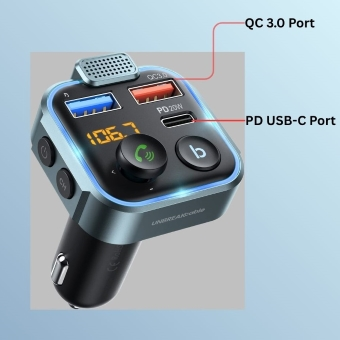
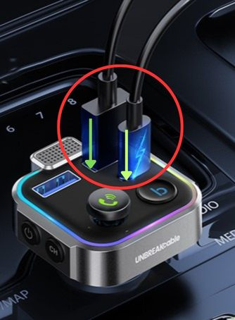
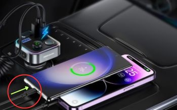

Charging Devices on FM Transmitter
This device includes two separate USB port for quick-charging mobile/electronic devices.
The only prerequisite needed for this task is having a Type-C or USB-A charging cable.
When wanting to charge your devices you can use both USB type ports for quick
charging.
Important:
The quick-charging feature
can only be activated by using only one of the quick-charging ports at a
time.
-
Locate the two quick-charging ports on the device. (QC 3.0 and PD USB-C)

-
Plug in the charging cable (not-included with device) into compatible charging
port.

-
Plug charging cable into mobile/electronic device.

The FM transmitter now can serve as a charger for mobile devices.
Note:
The Audio USB Flash Drive Port can be used for
charging, but this port has no quick-charging features.